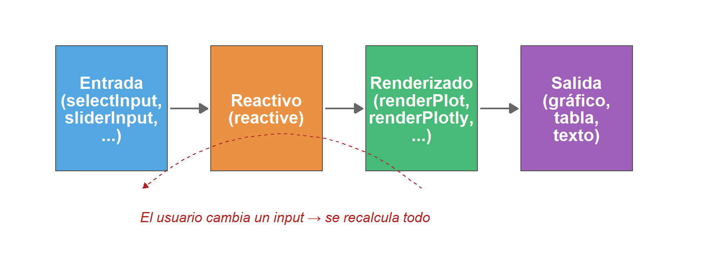
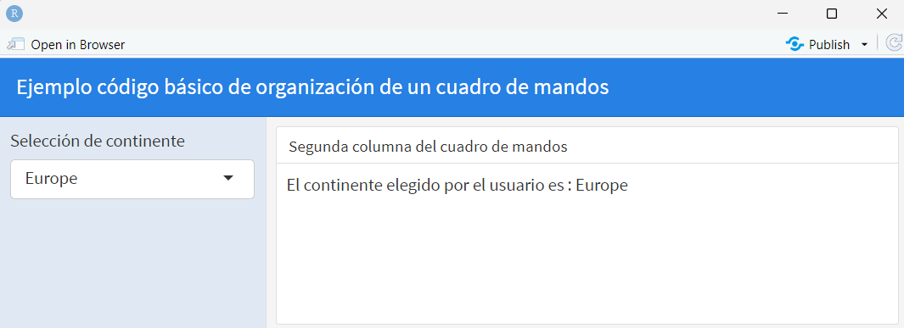
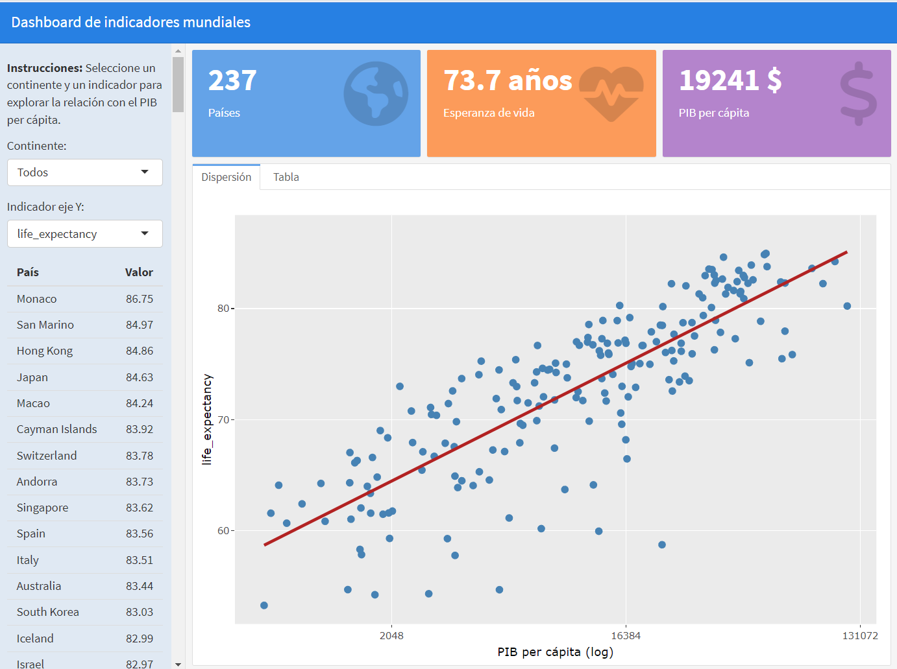
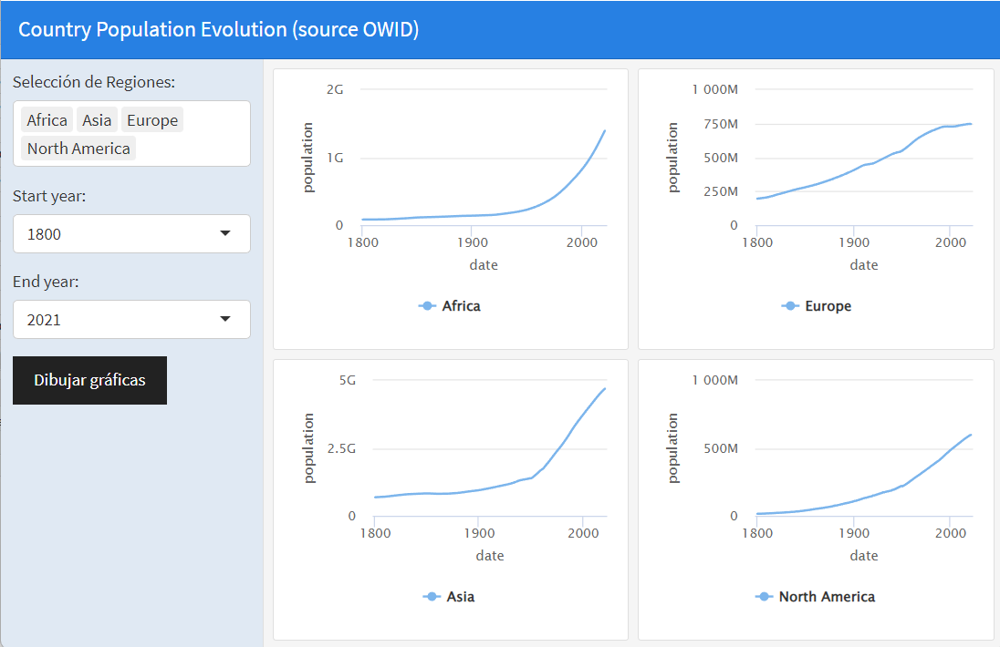
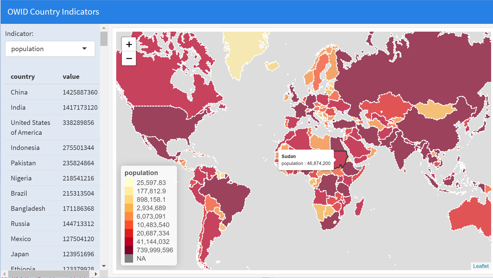
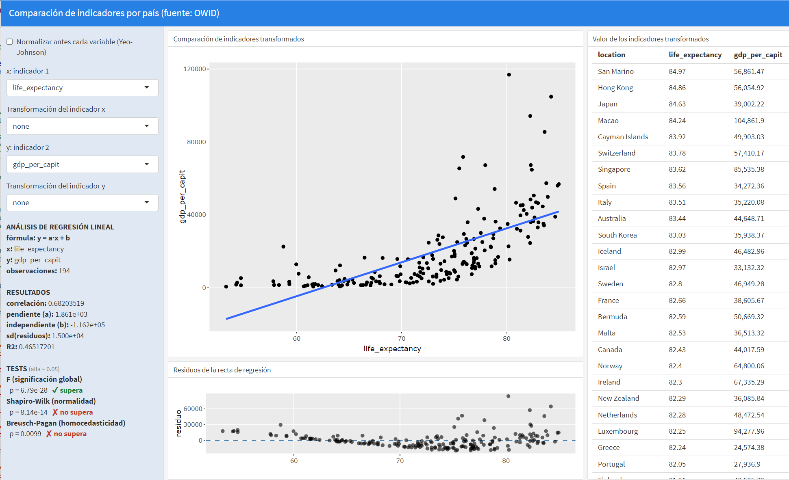
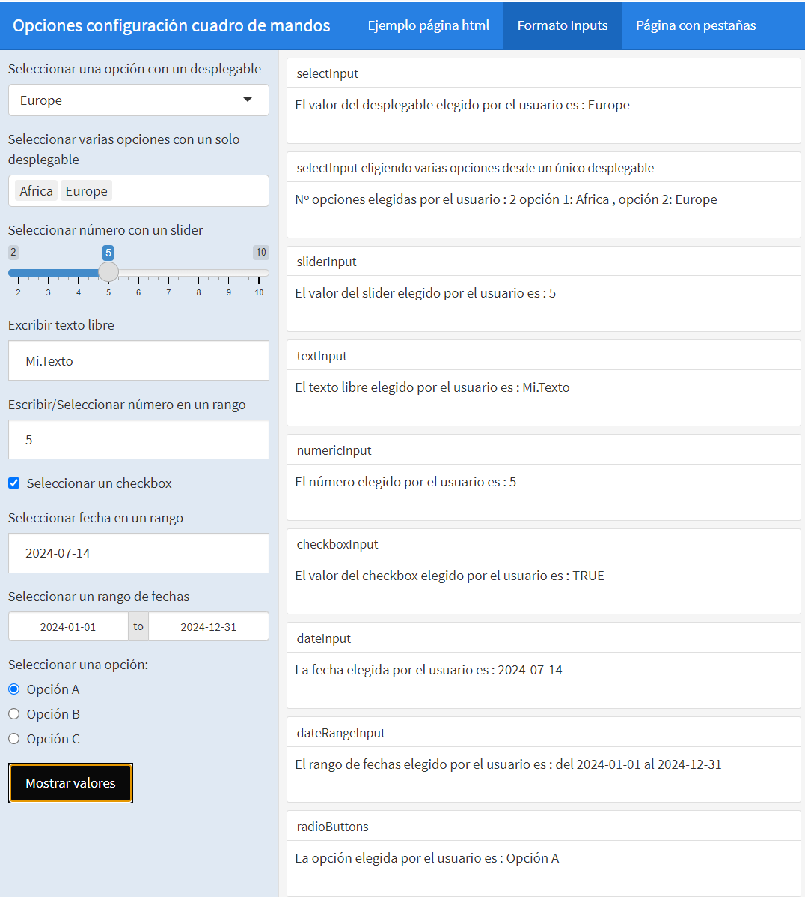
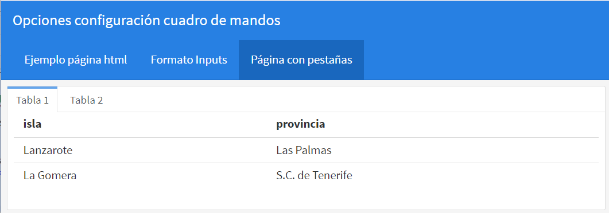
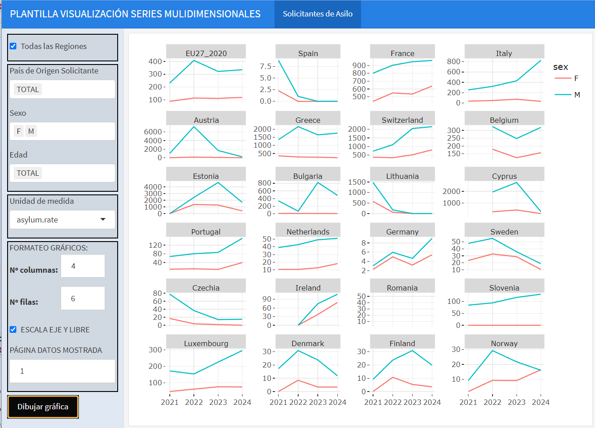

7 Cuadros de mando (dashboards)
Fecha última actualización: 2026-08-14
Instalación y carga de librerías
# Se instalan automáticamente si no están disponibles en el sistema
if (!require(shiny)) install.packages('shiny')
library(shiny) # Desarrollo de aplicaciones web interactivas con modelo de programación reactivo
if (!require(flexdashboard)) install.packages('flexdashboard')
library(flexdashboard) # Interfaz R Markdown para crear cuadros de mando estructurados en filas y columnas
if (!require(plotly)) install.packages('plotly')
library(plotly) # Gráficos interactivos (interfaz R para plotly.js)
if (!require(ggplot2)) install.packages('ggplot2')
library(ggplot2) # Visualización estática: gramática de gráficos
if (!require(tidyverse)) install.packages('tidyverse')
library(tidyverse) # Ecosistema de manipulación y visualización de datosLos cuadros de mando (dashboards) son aplicaciones web que presentan de forma organizada y coherente un conjunto de gráficos e indicadores. Pueden ser estáticos, mostrando siempre los mismos datos, o dinámicos, permitiendo al usuario seleccionar qué datos desea visualizar mediante menús y controles interactivos. En este curso se utilizará la librería shiny para crear cuadros de mando dinámicos, con flexdashboard como interfaz de diseño.
El paquete shiny fue lanzado en 2012 por RStudio con el objetivo de permitir a los usuarios de R desarrollar aplicaciones web interactivas sin necesidad de conocimientos de JavaScript, HTML o CSS. Su principal ventaja es un modelo de programación reactivo: la aplicación se actualiza automáticamente en respuesta a las acciones del usuario, lo que requiere que R esté ejecutándose en tiempo real. Por ello, para desplegar un cuadro de mando en un servidor web, dicho servidor debe configurarse con Shiny Server, lo que implica una mayor complejidad de infraestructura respecto a un simple fichero HTML estático. Como referencia rápida puede consultarse la ficha resumen de Shiny.
Despliegue de aplicaciones Shiny en un servidor web
A diferencia de un fichero HTML estático, una aplicación Shiny requiere que R esté ejecutándose en el servidor en tiempo real. Por ello, para publicar un cuadro de mando Shiny en Internet es necesario configurar el servidor con Shiny Server (versión gratuita para uso personal) o usar el servicio en la nube shinyapps.io. Esta dependencia es la principal limitación frente a los gráficos estáticos generados con plotly o highcharter, que pueden alojarse en cualquier servidor web.
Quarto Dashboards. A partir de 2023, Quarto (el sucesor de RMarkdown desarrollado por Posit) incluye soporte nativo para crear cuadros de mando con una sintaxis similar a la de
flexdashboard. Aunque en este curso usaremosflexdashboardpor su madurez y documentación, el estudiante debe conocer que Quarto Dashboards es la dirección hacia la que evoluciona el ecosistema y que los conceptos aprendidos aquí son directamente transferibles.
7.1 Principios de diseño de cuadros de mando
Buenas prácticas de diseño de dashboards
Antes de construir un cuadro de mando, es importante tener en cuenta algunos principios básicos de diseño que influyen significativamente en su utilidad:
La información más importante, arriba a la izquierda. Los usuarios leen de izquierda a derecha y de arriba abajo. Los KPIs (indicadores clave de rendimiento) y las conclusiones principales deben ocupar la posición más prominente.
Organización coherente del espacio. Cada página debe ser aprovechada de forma adecuada y coherente. Poner un solo gráfico de disco ocupando toda la página normalmente no queda bien. De la misma forma una página sobrecargada de información no comunica nada. Es preferible tener varias páginas o pestañas con información bien organizada que una sola página abarrotada.
Tener en cuenta tamaño dispositivo de visualización. No es lo mismo diseñar un cuadro de mandos para que se vea en una pantalla grande, en una pantalla pequeña o en un móvil. Lo ideal es que sea lo más universal posible. Simplemente cambiando el tamaño de la ventana donde se visualiza el cuadro de mandos nos dará una idea del efecto que tiene cambiar el tamaño del dispositivo y nos puede dar ideas para mejorar el diseño.
Usar color con propósito. El color no es decoración: debe comunicar información. Verde para valores positivos o dentro del rango esperado, amarillo para alertas, rojo para valores críticos. Evitar usar muchos colores sin significado.
Gráficos antes que tablas. Los gráficos se interpretan más rápidamente que las tablas numéricas. Las tablas son complementarias para consultar valores específicos.
Coherencia visual. Usar la misma paleta de colores, los mismos tipos de gráfico para datos comparables y un estilo tipográfico consistente en todo el cuadro de mando.
Controles accesibles. Los menús de selección y filtros deben estar agrupados (generalmente en una barra lateral) y ser autoexplicativos. El usuario debe entender qué controla cada selector sin necesidad de instrucciones.
Para profundizar en estos principios se recomienda la lectura de [Few06] Information Dashboard Design de Stephen Few.
El modelo reactivo de Shiny
El flujo de datos en un cuadro de mando dinámico sigue un modelo reactivo que se puede esquematizar de la siguiente forma:

Figure 7.1: Esquema del modelo reactivo de Shiny
En resumen: cuando el usuario modifica un control de entrada (por ejemplo un selectInput), Shiny detecta automáticamente qué partes del código dependen de esa entrada y las recalcula. Los bloques reactive() almacenan resultados intermedios y solo se recalculan si sus dependencias cambian. Los bloques renderXxx() producen la salida visual final.
7.2 Ejemplo básico
Para tener una primera idea de cómo funciona un cuadro de mandos dinámico vamos a presentar un primer ejemplo de cuadro de mandos organizado en 2 columnas. En la primera columna ponemos un menú desplegable para que el usuario elija un continente. En la segunda columna, simplemente imprimimos la selección realizada por el usuario. Una imagen estática de la salida de este cuadro de mandos sería la siguiente (para obtener la versión dinámica copiar el código que figura debajo en un fichero Rmd y ejecutar Run document en el menú superior (opción que reemplaza al knit en este tipo de ficheros Rmd)):

El código del fichero Rmd asociado a este cuadro de mandos es el siguiente:
---
title: "Ejemplo código básico de organización de un cuadro de mandos"
output: flexdashboard::flex_dashboard
runtime: shiny
---
Column {.sidebar data-width=230}
--------------------------------------------------
```{r}
shiny::selectInput(
"continente",
label = "Selección de continente",
choices = c("Africa","Asia","Europe"),
selected = "Europe"
)
```
Column
-----------------------------------------------------------------------
### Segunda columna del cuadro de mandos
```{r}
shiny::renderText({
paste("El continente elegido por el usuario es : ",input$continente)
})
```Observamos que en la cabecera declaramos que la salida es un cuadro de mandos usando la interfaz flexdashboard que se ejecuta usando shiny. La primera columna es una barra lateral de ancho 230 pixels donde declaramos un menú desplegable para seleccionar el valor de una variable usando la función selectInput. Esta función tiene 4 parámetros : El nombre de la variable (en este caso continente), el texto que se va a poner encima del desplegable (en este caso “Selección del continente”), los valores posibles de la variable (en este caso el vector que contiene a los continentes Africa, Asia y Europe), y el valor asignado a variable por defecto (en este caso Europe). Se declara a continuación una segunda columna donde simplemente llamamos a una función shiny que imprime el valor elegido por el usuario para la variable. Aquí hay dos cosas muy importantes a tener en cuenta: la primera es que para acceder en otras partes del código a la variable continente del desplegable utilizamos la notación input$continente y la segunda es que solo se puede acceder al valor de input$continente dentro de una función shiny. En este caso, la función shiny es renderText. Es decir, que el chunk :
nos hubiese generado un error dado que estamos intentando acceder a una variable dinámica del cuadro de mandos fuera de una función shiny. Esto hay que tenerlo muy en cuenta porque es un error muy habitual al construir los cuadros de mando.
7.3 Funciones reactivas y procesado de datos
En general, la lectura y el procesado inicial de datos que no depende de los inputs del usuario se realiza al principio en un chunk normal. El procesado de datos que requiere el uso de los inputs del usuario se realiza dentro de las funciones reactive que son bloques de código que se recalculan automáticamente cada vez que cambian las entradas de las que dependen. Estas funciones almacenan su valor de salida y sólo lo recalcularán si cambian sus dependencias. Con frecuencia, una función reactive necesita devolver (a través de un return) varios objetos creados por ella (por ejemplo varias tablas), en ese caso, lo que haremos es devolver una lista que contiene todos los objetos. Es decir, una función reactive de este tipo, que calcula y devuelve dos objetos data1 y data2 tendrá un código como el que sigue:
inputs.processing <- shiny::reactive({
# código que calcula data1 y data2
................
return(list(data1,data2))
})posteriormente, cuando se necesite acceder a data1 y/o data2 dentro de una función shiny se hará lo siguiente:
FunciónShiny({
data1 <- inputs.processing()[[1]]
data2 <- inputs.processing()[[2]]
# código de la función
})nótese que cualquier función shiny comienza por ({ y termina con }). Se recomienda analizar los códigos de los cuadros de mando que figuran a continuación para familiarizarse con las funciones reactive y en general con el diseño e implementación de cuadros de mando.
Funciones de renderizado
Cada tipo de gráfico o salida tiene asociada una función render específica en Shiny/flexdashboard. La siguiente tabla resume las más habituales:
| Tipo de salida | Función render | Librería |
|---|---|---|
| Gráfico ggplot2 | renderPlot({}) |
shiny |
| Gráfico plotly | renderPlotly({}) |
plotly |
| Gráfico highcharter | renderHighchart({}) |
highcharter |
| Mapa leaflet | renderLeaflet({}) |
leaflet |
| Texto | renderText({}) |
shiny |
| Tabla estática | renderTable({}) |
shiny |
| Tabla DT (interactiva) | DT::renderDataTable({}) |
DT |
| Código HTML | renderUI({}) |
shiny |
| Imagen | renderImage({}) |
shiny |
valueBox para indicadores clave
Los valueBox son elementos visuales destacados que muestran un valor numérico con un icono y un color de fondo. Son ideales para presentar KPIs en la parte superior del cuadro de mando. La siguiente estructura muestra cómo usarlos en un fichero flexdashboard:
Row
-----------------------------------------------------------------------
### Países
```{r}
n_paises <- nrow(owid_country)
valueBox(n_paises, caption = "Países", icon = "fa-globe", color = "primary")
```
### Esperanza de vida media
```{r}
media_ev <- round(mean(owid_country$life_expectancy, na.rm = TRUE), 1)
valueBox(paste0(media_ev, " años"), caption = "Esperanza de vida media",
icon = "fa-heartbeat", color = "success")
```
### PIB per cápita medio
```{r}
media_pib <- round(mean(owid_country$gdp_per_capit, na.rm = TRUE), 0)
valueBox(paste0(media_pib, " $"), caption = "PIB per cápita medio",
icon = "fa-dollar-sign", color = "info")
```Los valueBox aceptan los colores "primary", "info", "success", "warning" y "danger", así como colores HEX (ej: "#FF5733"). Los iconos se toman de Font Awesome usando el prefijo fa-.
Tablas interactivas con DT::renderDataTable
La función renderTable de Shiny genera tablas estáticas sin interactividad. Para tablas profesionales con búsqueda, paginación y ordenación, es preferible usar DT::renderDataTable:
```{r}
DT::renderDataTable({
owid_country |>
filter(continent == input$continente) |>
select(location, life_expectancy, gdp_per_capit) |>
DT::datatable(options = list(pageLength = 10, scrollX = TRUE)) |>
DT::formatRound(columns = c('life_expectancy', 'gdp_per_capit'), digits = 1)
})
```La ventaja de DT::datatable es que el usuario puede buscar, ordenar por cualquier columna y navegar con paginación, lo cual es mucho más útil que una tabla estática, especialmente con muchos registros.
Manejo de errores en la reactividad
Un problema frecuente al construir cuadros de mando es que el dashboard “se rompa” cuando el usuario selecciona una combinación de inputs que produce datos vacíos o errores. Las funciones validate y need permiten mostrar un mensaje informativo en lugar de un error:
```{r}
renderPlotly({
datos <- owid_country |> filter(continent == input$continente)
# Verificación: si no hay datos, mostramos mensaje en vez de error
validate(
need(nrow(datos) > 0, "No hay datos disponibles para esta selección"),
need(!all(is.na(datos$life_expectancy)), "Todos los valores son NA para este indicador")
)
p <- datos |>
ggplot(aes(x = gdp_per_capit, y = life_expectancy, label = location)) +
geom_point() +
scale_x_continuous(transform = 'log2')
ggplotly(p)
})
```need(condición, mensaje) evalúa la condición: si es FALSE o NULL, interrumpe la ejecución del bloque y muestra el mensaje al usuario de forma elegante. validate agrupa varias comprobaciones. Es buena práctica incluir al menos una verificación validate/need en cada bloque render.
Botones y acciones bajo demanda
Hasta ahora, todos los ejemplos usan reactividad automática: al cambiar un selectInput, el gráfico se actualiza inmediatamente. En ocasiones, queremos que la actualización ocurra solo cuando el usuario pulse un botón. Para ello usamos actionButton combinado con observeEvent o eventReactive:
Column {.sidebar data-width=230}
--------------------------------------------------
```{r}
selectInput("pais", "Seleccione país:", choices = owid_country$location)
actionButton("actualizar", "Actualizar gráfico", icon = icon("refresh"))
```
Column
--------------------------------------------------
### Gráfico
```{r}
# Solo se recalcula cuando se pulsa el botón
datos_filtrados <- eventReactive(input$actualizar, {
owid_country |> filter(location == input$pais)
})
renderPlotly({
p <- datos_filtrados() |>
ggplot(aes(x = gdp_per_capit, y = life_expectancy)) +
geom_point(size = 4)
ggplotly(p)
})
```La diferencia clave es que eventReactive solo ejecuta el código cuando ocurre el evento especificado (en este caso, el clic en el botón actualizar), a diferencia de reactive que se recalcula automáticamente con cada cambio de input. Esto es útil cuando el cálculo es costoso y no queremos que se ejecute con cada cambio intermedio del usuario.
Organización con pestañas
Cuando un cuadro de mando tiene mucha información, es habitual organizarla en pestañas para evitar sobrecargar la pantalla. En flexdashboard las pestañas se crean añadiendo {.tabset} al encabezado de una columna o fila:
Column {.tabset}
-----------------------------------------------------------------------
### Gráfico de dispersión
```{r}
renderPlotly({
p <- owid_country |>
ggplot(aes(x = gdp_per_capit, y = life_expectancy, color = continent)) +
geom_point()
ggplotly(p)
})
```
### Diagrama de cajas
```{r}
renderPlotly({
p <- owid_country |>
ggplot(aes(x = continent, y = life_expectancy, fill = continent)) +
geom_boxplot()
ggplotly(p)
})
```
### Tabla de datos
```{r}
DT::renderDataTable({
owid_country |>
select(location, continent, life_expectancy, gdp_per_capit) |>
DT::datatable()
})
```Cada ### dentro de una columna con {.tabset} genera una pestaña independiente. Esto permite presentar múltiples vistas de los datos sin ocupar más espacio en pantalla.
Errores frecuentes en Shiny
Errores habituales al construir cuadros de mando
Estos son los fallos que más tiempo hacen perder al principiante con Shiny:
- Acceder a
input$xfuera de un contexto reactivo. Como ya se indicó,input$xsolo puede leerse dentro de una funciónreactive,render*uobserve. Fuera de ellas da error. - Olvidar los paréntesis al usar un
reactive. Un bloquedatos <- reactive({...})se llama comodatos(), no comodatos. Escribirdatossin()no ejecuta el cálculo y produce errores confusos. - Los outputs no se actualizan. Suele deberse a que el cálculo se hizo en un
chunknormal (que solo se ejecuta una vez) en lugar de dentro de unrender*, o a que se usóeventReactive/observeEventy no se está disparando el evento (no se pulsa el botón). - Leer o procesar datos dentro de cada
render. Repetir la lectura de datos en cada renderizado hace el dashboard lento; los datos que no dependen de inputs deben leerse una sola vez al inicio. - Usar un objeto no reactivo esperando reactividad. Modificar una variable global no dispara la actualización; el estado que debe reaccionar tiene que pasar por
input$...o por unreactiveVal/reactive. - Nombres de
output/inputque no coinciden entre la definición y su uso, o duplicados: producen salidas en blanco sin mensaje claro.
7.4 Ejemplo organización cuadro de mandos completo
A continuación se presenta el código completo de un cuadro de mando funcional que combina los elementos vistos: valueBox, selectInput, reactive, renderPlotly, DT::renderDataTable y validate/need. La apariencia de la ventana principal es la siguiente:

Observamos que se ocupa todo el espacio de forma razonable, con los valueBox arriba de forma destacada, La selección de inputs a la izquierda. Para aprovechar el espacio, debajo de esa columna se pone una tabla con los países seleccionados. Finalmente, debajo de los valueBox se ponen dos pestañas con un gráfico y una tabla dinámica respectivamente. El diseño resulta visualmente equilibrado, se aprovecha todo el espacio sin saturar de información. El código de este cuadro de mandos se encuentra en Dashboard01.Rmd
Este ejemplo ilustra un patrón habitual de cuadro de mando profesional: barra lateral con controles, fila superior con KPIs en valueBox con colores condicionales, y panel principal con pestañas para gráfico y tabla.
7.5 Cuadro de mandos con hchart
Vamos a estudiar el ejemplo de cuadro de mando dinámico que se encuentra en Dashboard1.Rmd, cuya ejecución se visualiza a continuación (para poder interactuar con el gráfico hay que ejecutar el fichero Rmd desde Rstudio) :

En este cuadro de mando se presentan 4 gráficos comparativos, realizados con hchart, de la evolución de la población en 4 países o regiones del mundo. A la izquierda aparece un menú desplegable múltiple para elegir hasta 4 países/región (uno por gráfico), dos menús con los años de inicio y fin del periodo, y un botón que dispara el dibujado conjunto de los 4 gráficos: mientras no se pulsa, cambiar los desplegables no actualiza nada, de modo que el usuario completa toda la selección antes de lanzar el cálculo. Para generar este cuadro de mando localmente, hay que cargar el fichero Dashboard1.Rmd en Rstudio y ejecutar run document. Observamos que este cuadro de mando se organiza en 3 columnas: en la primera columna aparecen los menús desplegables y el botón, en la segunda columna aparecen dos gráficos generados con hchart y en la tercera columna otros 2 gráficos similares. Usando flexdashboard este cuadro de mando se organiza de la siguiente forma :
Lectura de los datos que usa el cuadro de mandos.
Creación de una función auxiliar,
dibujar_poblacion(pais, anyo_inicio, anyo_fin), que encapsula el código que construye el gráficohchartde un país a partir de esos tres argumentos. Al escribir la lógica de dibujo una sola vez, los 4 gráficos se reducen a invocar esta función con argumentos distintos, en vez de repetir el mismo bloque de código 4 veces.Creación de una primera columna para poner los menús desplegables y el botón. La columna se crea usando el código:
el menú de país/región se crea con selectInput y la opción multiple = TRUE, de forma que el usuario elige hasta 4 valores en un único campo input$country; dentro de las funciones que dibujan se accede a cada uno por posición, input$country[1], input$country[2], etc. Los años de inicio y fin se recogen con otros dos selectInput (input$yearinit, input$yearend). Por último se añade un actionButton("dibujar", ...) y una reactiva seleccion <- eventReactive(input$dibujar, {...}) que empaqueta en una lista los valores de los tres desplegables en el momento del clic. Los gráficos leen esa lista, no los input$ directamente, así que un cambio en los desplegables no se propaga hasta que se pulsa el botón.
- Creación de una segunda columna para poner 2 gráficos apilados de la población de dos países/regiones. La columna la creamos de nuevo usando la instrucción
Cada gráfico lo creamos con la función renderHighchart, que ahora se limita a leer la selección reactiva y llamar a la función auxiliar. Es decir para que aparezcan los dos gráficos el código seguiría el siguiente estilo
###
renderHighchart({
datos <- seleccion()
dibujar_poblacion(datos$country[1], datos$yearinit, datos$yearend)
})
###
renderHighchart({
datos <- seleccion()
dibujar_poblacion(datos$country[2], datos$yearinit, datos$yearend)
})- Creación de una tercera columna de forma idéntica a la segunda, pero usando
datos$country[3]ydatos$country[4]
El interés de actionButton para acelerar la carga del cuadro de mando
Sin el botón, cada renderHighchart se recalcula automáticamente al abrir el cuadro de mando y de nuevo cada vez que el usuario toca cualquier desplegable del que depende. Si el cálculo es rápido, como en este ejemplo, no se nota. Pero cuando los gráficos u operaciones que hay detrás son costosos —un modelo que se reajusta, una consulta a una base de datos, una descarga de datos remotos, un join sobre una tabla grande, o simplemente varios gráficos pesados a la vez, como aquí—, esa recarga automática hace que el cuadro de mando tarde en abrirse y que cada cambio de selección se note. Envolver el cálculo en un eventReactive ligado a un actionButton traslada el control al usuario: el cuadro de mando se abre de inmediato (o con un cálculo inicial único), el usuario ajusta con calma todos los desplegables sin disparar ningún recálculo, y el trabajo pesado solo se ejecuta una vez, al pulsar el botón. Es el mismo patrón que conviene aplicar en cualquier otro cuadro de mando de este capítulo si sus gráficos individualmente son lentos de generar. Es especialmente útil cuando el input es un sliderInput: al arrastrarlo, Shiny no espera a que el usuario suelte el ratón, sino que dispara un evento reactivo por cada valor intermedio por el que pasa, así que sin actionButton el gráfico se recalcularía muchas veces de más durante un solo arrastre; con el botón, el deslizador se puede mover con calma hasta el valor deseado y el cálculo solo se lanza una vez, al pulsar.
7.6 Cuadro de mandos con Leaflet
Vamos a estudiar el cuadro de mandos que se encuentra en el fichero Dashboard2.Rmd, cuya ejecución se visualiza a continuación:

En este caso, el cuadro de mandos tiene dos columnas. En la primera columna aparece un menú desplegable para elegir el indicador de los países que vamos a usar y aparece también una tabla con los datos del indicador en orden descendente. Las tablas en flexdashboard, se generan usando la función renderTable (para tablas estáticas) o DT::renderDataTable (para tablas interactivas con búsqueda y ordenación). A la derecha aparece una columna con un mapa coroplético con los valores del indicador (para interactuar con el gráfico hay que ejecutar el fichero Rmd desde Rstudio)
7.7 Cuadro de mandos con Plotly
Vamos a estudiar el cuadro de mandos que se encuentra en el fichero Dashboard3.Rmd, cuya ejecución se visualiza a continuación:

Este cuadro de mando se organiza en 3 columnas. En la primera columna se muestran algunos menús desplegables y una tabla de resultados, en la segunda columna un diagrama de dispersión usandoplotly y en la tercera columna una tabla con datos.
El objetivo de este cuadro de mando es estudiar la relación entre cualquier par de indicadores sobre los países publicados por la OWID y utilizados en el cuadro de mandos anterior. Al primer indicador lo llamaremos \(x\) y al segundo \(y\). Por ejemplo, en la imagen anterior se muestra la comparación entre \(x=\)life_expectancy e \(y=\)gdp_per_capit. El modelo que usaremos es la conocida regresión lineal, es decir, buscamos una relación lineal entre \(x\), \(y\), dada por
\[y=ax+b\]
donde \(a\) es la pendiente (slope) y \(b\) es el término independiente (independent). Para mejorar el ajuste de las dos variables por la recta de regresión se permite al usuario escalar las variables antes de hacer la comparación. Escalar \(x\) significa que sustituimos \(x\) por \(s_x(x)\), donde \(s_x()\) es la transformada utilizada, en nuestro caso, damos como opciones \(s_x(x)=sgn(x)log(|x|)\), o \(s_x(x)=sgn(x)sqrt(|x|)\). Este tipo de escalado ya lo hemos usado en ggplot a efectos de visualización. De la misma forma, opcionalmente, escalamos \(y\) con \(s_y(y)\), permitiendo elegir \(s_y(y)=sgn(y)log(|y|)\) o \(s_y(y;\lambda)\) dada por la transformada de Yeo-Johnson (ver [YeJo00]). Veremos en más detalle este cuadro de mandos en el próximo tema.
7.8 Opciones de configuración
Existen múltiples opciones de configuración para la salida de un cuadro de mandos. Para ilustrar algunas de ellas vamos a usar el cuadro de mandos de ejemplo Dashboard4.Rmd. Este cuadro de mandos tiene un menú en la parte superior para acceder a 3 páginas. En la primera página vemos un ejemplo de renderizado de código html:
En la segunda página vemos algunos ejemplos de formato de entrada para diferentes tipos de variables: desplegable de una opción, desplegable de varias opciones, slider, texto libre, número, checkbox, fecha, rango de fechas (dateRangeInput, con los dos calendarios de inicio y fin uno a cada lado) y botones de radio. Un único actionButton afecta a todos estos inputs a la vez: los textos de la derecha solo se actualizan al pulsarlo, siguiendo el mismo patrón eventReactive del cuadro de mando anterior.

En la tercera página se muestra una página con 2 pestañas que nos permite acceder a dos subpáginas diferentes:

7.9 Exploración de datos multidimensionales
Los cuadros de mando anteriores están escritos a la medida de sus datos. El del fichero Dashboard5.Rmd responde a un objetivo distinto: es una plantilla pensada para adaptarse a cualquier conjunto de datos multidimensional cambiando solo su configuración inicial. En el ejemplo se aplica a las series temporales de las solicitudes de asilo en Europa, un conjunto de datos con cinco dimensiones (región de acogida, país de origen, sexo, edad y unidad de medida):

La idea de diseño consiste en repartir los atributos del conjunto de datos en tres papeles distintos, que son los tres primeros bloques del menú de la izquierda:
Un atributo principal, que separa la pantalla en un gráfico por cada una de sus opciones mediante
facet_wrap(en el ejemplo, la región de acogida). Se pueden mostrar todas las opciones o elegir unas cuantas a mano, según esté marcada o no la casilla del primer bloque.Unos atributos combinables, de los que el usuario puede marcar varias opciones. Si marca varias de dos atributos distintos, ambos se combinan en un único atributo que da color a las series dentro de cada gráfico.
Unos atributos de valor único, de los que se fija una sola opción y que no participan en la combinación.
A ellos se añade un cuarto bloque de controles de formato: número de filas y columnas de gráficos, escala del eje \(y\) libre o compartida, y página de datos mostrada, porque el número de gráficos puede ser mayor que lo que cabe en la pantalla. Debajo de ese bloque se añade un actionButton que dispara el dibujado: mientras no se pulsa, cambiar cualquier control del menú no recalcula la gráfica, lo que interesa especialmente aquí porque el facet_wrap puede llegar a dibujar muchos paneles a la vez (ver la nota sobre actionButton en la sección anterior).
Lo interesante es que toda esa lógica está escrita una sola vez y funciona a partir de unas listas de configuración declaradas al principio del fichero:
input.main.config.pageId <- list(
list(col.name="geo.name", label="Región acogida", choices=RegionAcogida,
selected=RegionAcogida[1:6], multiple=TRUE)
)
input.multiple.config.pageId <- list(
list(col.name="citizen.name", label="País de Origen Solicitante",
choices=PaisOrigen, selected="TOTAL", multiple=TRUE),
list(col.name="sex", label="Sexo", choices=c("T","F","M"),
selected=c("F","M"), multiple=TRUE),
...
)Cada atributo declara la columna de la tabla que le corresponde (col.name), el rótulo con el que se presenta (label), las opciones que ofrece (choices) y las que vienen marcadas de partida (selected). Los menús desplegables se generan recorriendo esas listas con lapply, de modo que añadir o quitar un atributo del cuadro de mandos consiste en añadir o quitar un elemento de la lista, sin tocar el código que dibuja.
Los identificadores de los controles se construyen todos de la misma forma, anteponiendo al nombre de la columna el identificador de la página:
de manera que el menú del atributo geo.name de la página p1 se lee con input[[id_control("geo.name")]]. Tenerlo en una sola función evita el error más molesto al reutilizar esta plantilla: si se copia la página entera para poner dos exploradores en el mismo cuadro de mandos, basta con cambiar el valor de pageId para que ningún control comparta nombre con los de la otra página.
El mismo problema de duplicidad aparece con la reactiva que empaqueta la selección al pulsar el actionButton: seleccion[[pageId]] <- eventReactive(input[[id_control("dibujar")]], {...}) la guarda en una lista indexada por pageId, en vez de en una variable suelta como seleccion.p1. Así, si se duplica la página, cada copia obtiene su propia entrada en la lista (seleccion[[pageId]]() dentro del renderPlotly) sin tener que renombrar nada a mano, exactamente igual que ocurre con id_control().
Una plantilla tiene que decir qué hay que tocar
Un fichero pensado para adaptarlo a otros datos debería poder recorrerse buscando las marcas de lo que cambia. En este ejemplo están señaladas como PASO 1 a PASO 4, en el sitio exacto donde se aplican: la lectura de los datos, los vectores con las opciones de cada atributo en el orden deseado, la configuración de los tres bloques de atributos y, por último, el título del cuadro de mandos, que es el único que queda fuera del código porque vive en la cabecera YAML del fichero.
Conviene además comprobar la configuración justo después de escribirla, y bastan tres líneas que verifiquen que las columnas que nombra existen de verdad en la tabla:
faltan <- setdiff(columnas.configuradas, names(data))
if (length(faltan) > 0)
stop("Estas columnas no están en los datos: ", paste(faltan, collapse=", "),
". Las que hay son: ", paste(names(data), collapse=", "))Es una costumbre barata que evita el peor modo de fallo de un cuadro de mando: un nombre de columna mal escrito no protesta al arrancar, sino más tarde y dentro de una función render, donde el único síntoma es un gráfico vacío del que no se sabe nada.
Adaptar este cuadro de mandos a otros datos consiste, por tanto, en recorrer esos cuatro pasos: el filtrado, la combinación de atributos, la paginación y el dibujado funcionan sin tocar nada más.
7.10 Rendimiento de los cuadros de mando
Cuando un cuadro de mando trabaja con datos grandes o cálculos complejos, es importante tener en cuenta algunas buenas prácticas de rendimiento:
Leer los datos una sola vez. La lectura de datos (especialmente desde URLs o ficheros grandes) debe hacerse en un
chunknormal al inicio, no dentro de funcionesreactiveorender. Esto evita que se relean los datos cada vez que el usuario cambia un input.Usar
reactivepara cálculos intermedios. Si varios outputs comparten el mismo procesado de datos, encapsularlo en unreactiveevita recalcular lo mismo múltiples veces.Evitar recálculos innecesarios. Para controles como sliders que el usuario mueve rápidamente, la función
debounce(reactive_expr, millis)retrasa la ejecución hasta que el usuario deja de mover el slider durante el tiempo especificado (en milisegundos):
datos <- reactive({ owid_country |> filter(population > input$min_poblacion) })
datos_debounced <- datos |> debounce(500) # espera 500ms antes de recalcular- Diferir el cálculo con
actionButton. Cuando el gráfico es realmente costoso —o hay varios inputs que el usuario quiere ajustar a la vez antes de ver el resultado—, en vez de retrasar unos milisegundos conviene esperar a una acción explícita del usuario. UnactionButtoncombinado coneventReactivehace que el cálculo solo se dispare al pulsarlo, así que ajustar los controles no cuesta nada y el trabajo pesado se ejecuta una única vez:
actionButton("dibujar", "Dibujar gráfica")
seleccion <- eventReactive(input$dibujar, {
list(pais = input$pais, anyo_inicio = input$anyo_inicio, anyo_fin = input$anyo_fin)
})
renderPlot({
datos <- seleccion()
# cálculo costoso usando datos$pais, datos$anyo_inicio, datos$anyo_fin
})Es el patrón usado en los cuadros de mando de las secciones anteriores (ver la nota sobre su interés en la sección Cuadro de mandos con hchart), y conviene especialmente cuando alguno de los inputs es un sliderInput, porque arrastrarlo dispara un evento reactivo por cada valor intermedio.
- Reducir el volumen de datos que se envían al navegador. Los gráficos interactivos con miles de puntos generan HTML pesado. Si es posible, agregar o muestrear los datos antes de enviarlos al gráfico.
7.11 Publicar un cuadro de mando
Para publicar un cuadro de mando realizado por flexdashboard hay diversas formas (ver posit.co/products/open-source/shinyapps). Lo más sencillo es usar el servidor de shinyapps.io. Para ello hay que darse de alta en el citado sitio web y seguir las siguientes
instrucciones. La versión gratuita de uso del servidor permite 5 aplicaciones y 25 horas mensuales de ejecución. Otra opción más compleja, pero también gratuita, es alojar en un servidor LINUX propio el software completo de Shiny Server.
Ideas clave del capítulo
Ideas clave
- Un cuadro de mando dinámico con
shinynecesita R ejecutándose en el servidor; un HTML estático no. - El modelo reactivo: al cambiar un
input, Shiny recalcula automáticamente losreactiveyrender*que dependen de él. - Buen diseño: información importante arriba a la izquierda, KPIs en
valueBox, controles agrupados en la barra lateral, color con propósito y pestañas para no saturar. - Leer los datos una sola vez, usar
reactivepara cálculos compartidos yvalidate/needpara evitar que el dashboard se rompa. eventReactive/actionButtonpermiten actualizar bajo demanda cuando el cálculo es costoso;debounceevita recálculos con sliders.
Checklist antes de publicar un dashboard
- Los datos se leen una sola vez fuera de los
render. - Cada bloque
rendertiene al menos una comprobaciónvalidate/need. - Accedo a
input$...siempre dentro de funciones reactivas y llamo a losreactivecon(). - El diseño se ve bien al cambiar el tamaño de la ventana (dispositivos distintos).
- He probado combinaciones de inputs que producen datos vacíos.
Referencias
[BoCo64] Box, G. E., and D. R. Cox.. An analysis of transformations, Journal of the Royal Statistical Society. Series B (Methodological), 211–52, 1964.
[Few06] Stephen Few. Information Dashboard Design: The Effective Visual Communication of Data, O’Reilly, 2006.
[YeJo00] Yeo, I. K., and Johnson, R. A., A new family of power transformations to improve normality or symmetry. Biometrika, 87(4), 954–959, (2000).
[Shinyapps] Shinyapps
[SIAB23] Sievert, Carson, Richard Iannone, JJ Allaire, and Barbara Borges. 2023. flexdashboard: R Markdown Format for Flexible Dashboards, 2023.